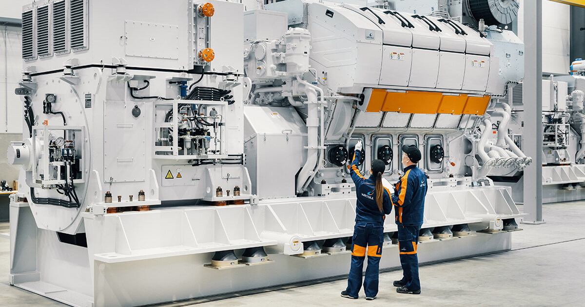

Bienvenue sur mon portfolio professionnel !
Découvrez mon parcours, mes compétences techniques
et mes projets dans le domaine du génie électromécanique.

À propos de moi
Je suis El Hadji Moustapha GUEYE, ingénieur de conception
en génie électromécanique, diplômé de l'École Polytechnique
de Thiès (EPT).
Passionné par les technologies industrielles, la maintenance
des équipements et les systèmes énergétiques, je m'intéresse
à la conception, à l'exploitation et à l'optimisation des
installations électromécaniques.
Mon objectif est de contribuer à l'amélioration de la
fiabilité des équipements, à la performance industrielle
et à l'efficacité énergétique grâce à des solutions
techniques adaptées.
Mes compétences techniques
Maintenance industrielle préventive et corrective
Diagnostic et dépannage des équipements électromécaniques
Électrotechnique et machines électriques
Mécanique industrielle et systèmes de transmission
Automatisme industriel et instrumentation
Conception et dimensionnement des installations électriques
Étude et optimisation des systèmes énergétiques
Amélioration de la fiabilité et de la performance des équipements
Logiciels et outils techniques
MATLAB / Simulink
SolidWorks
ANSYS
Python
Microsoft Excel
Présentation vidéo
Présentation audio
Mes projets et réalisations
Projet 1 : Système énergétique multisource
Conception et optimisation d'une solution énergétique
combinant plusieurs sources de production pour assurer
une alimentation électrique fiable et continue d'un
site isolé, avec une étude de cas portant sur le village
de Bassoul.
Compétences mobilisées : dimensionnement énergétique,
analyse des profils de consommation et optimisation
technico-économique et environnementale.
Projet 2 : Maintenance des installations industrielles
Découverte et analyse du fonctionnement des équipements
d'une centrale électrique lors d'une expérience
en milieu industriel, notamment les moteurs,
les alternateurs et leurs systèmes auxiliaires.
Compétences mobilisées : observation technique,
compréhension des équipements, maintenance industrielle
et analyse des systèmes électromécaniques.
Projet 3 : Développement informatique
Initiation au développement web et à la programmation
pour présenter des projets techniques et faciliter
l'exploitation des données.